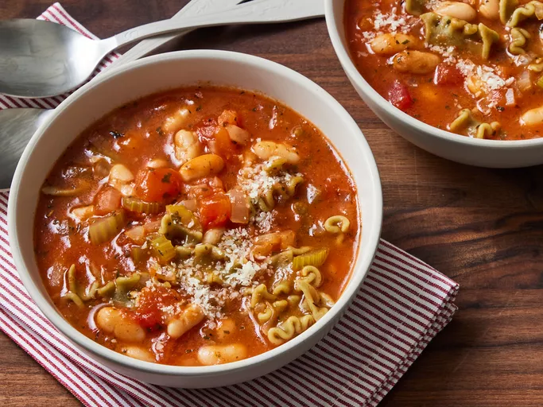

Pasta
Go back to home

Ingredients
- 1 tablespoon olive oil
- 1 medium onion, chopped
- 2 stalks celery, chopped
- 3 cloves garlic, minced
- 2 teaspoons dried parsley
- 1 teaspoon Italian seasoning
- ¼ teaspoon crushed red pepper flakes
- salt to taste
- 1 (14.5 ounce) can chicken broth
- 2 medium tomatoes, peeled and chopped
- 1 (8 ounce) can tomato sauce
- ½ cup ditalini or other small pasta
- 1 (15 ounce) can cannellini beans, with liquid
Directions
- Heat olive oil in a large saucepan over medium heat. Add onion, celery, garlic, parsley, Italian seasoning, pepper flakes, and salt; cook and stir until onion is translucent, about 5 minutes.
- Stir in chicken broth, tomato sauce, and tomatoes. Reduce the heat to low and simmer for 15 to 20 minutes.
- Add pasta and cook until tender, about 10 minutes.
- Stir in undrained beans and cook until heated through, 3 to 4 minutes.
- Serve hot and enjoy!